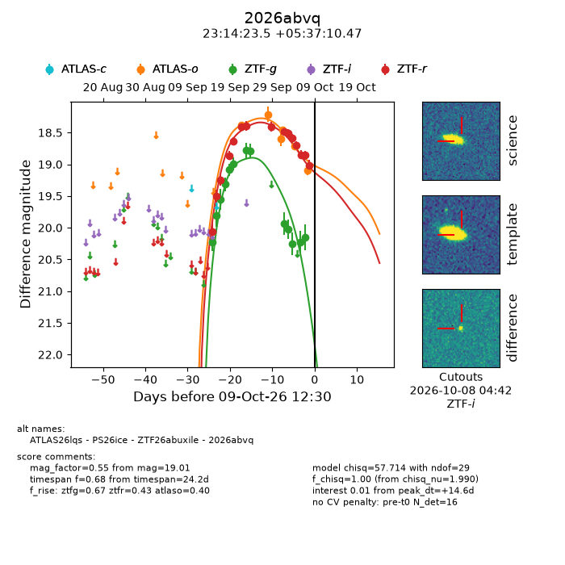
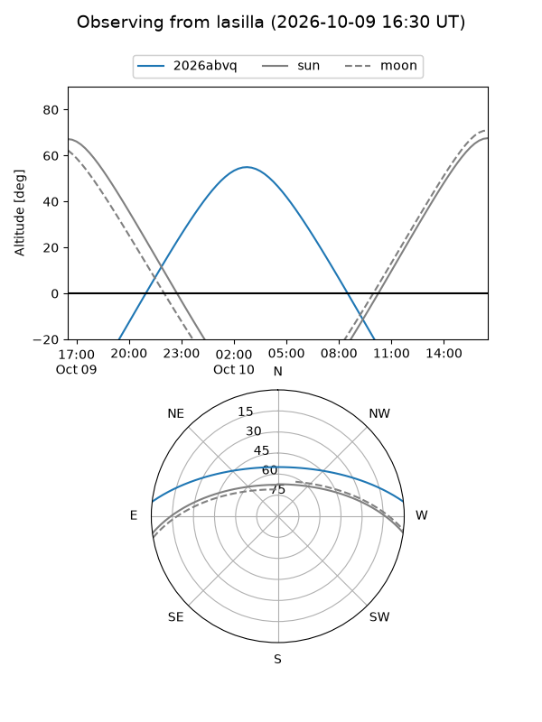
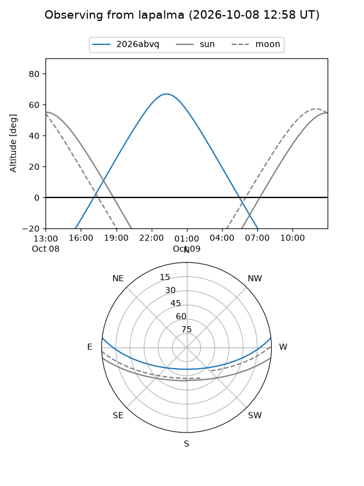
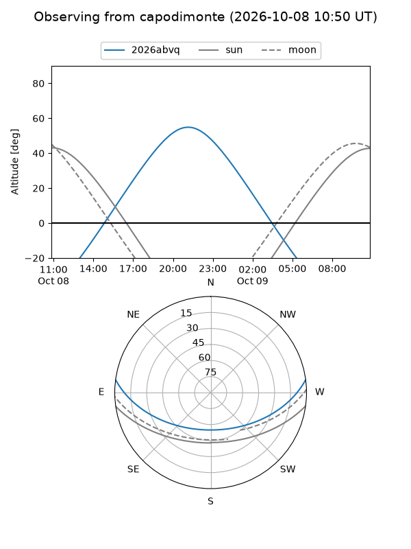
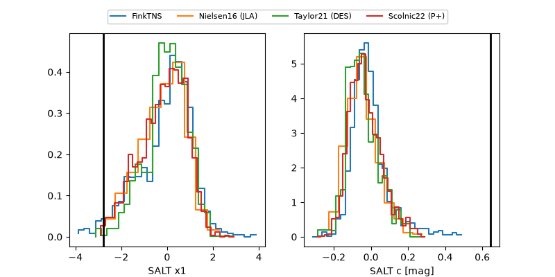

2026abvq
Target 2026abvq at 2026-10-09 12:32
Aliases and brokers:
FINK-ZTF: ztf.fink-portal.org/ZTF26abuxile
Lasair-ZTF: lasair-ztf.lsst.ac.uk/objects/ZTF26abuxile
ALeRCE-ZTF: alerce.online/object/ZTF26abuxile
YSE-PZ: ziggy.ucolick.org/yse/transient_detail/2026abvq
TNS name: wis-tns.org/object/2026abvq
Direct TNS query: direct search
alt names
ZTF26abuxile (ztf,fink_ztf)
2026abvq (tns,yse)
ATLAS26lqs (atlas)
PS26ice (panstarrs)
Coordinates:
equatorial (ra, dec) = 348.5981,+5.61958
equatorial (HMS+DMS) = 23:14:23.54,+05:37:10.47
galactic (l, b) = (83.7024,-49.71467)
Flags:
peak dt: +14.6
Photometry:
last atlaso=19.10, ztfg=20.15, ztfr=19.01
6 atlaso, 13 ztfg, 15 ztfr detections
Lightcurve

Visibility



Additional plots
